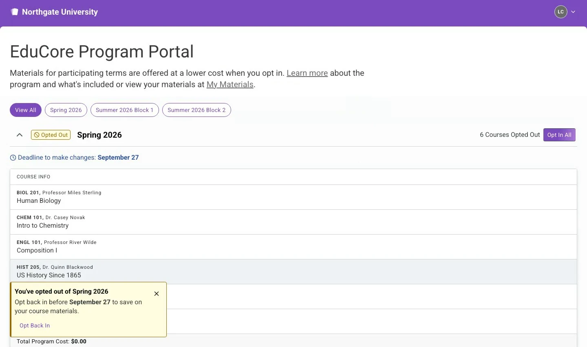
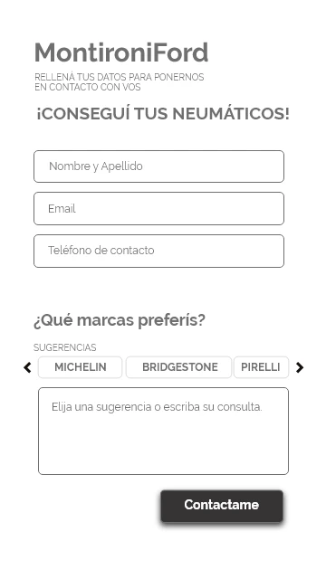
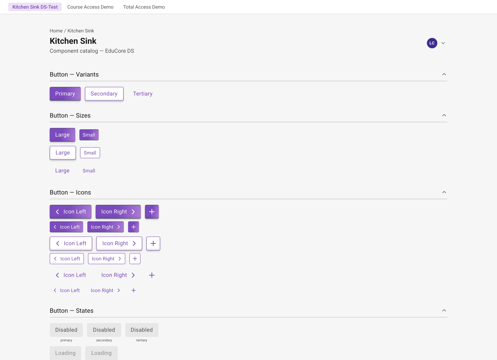

Colores
Marca
Accent
--accentAccent Ink
--accent-inkAcento como texto / focus ring (AA en ambos temas)
Accent Dim
--accent-dimAccent Pale
--accent-paleAccent 2
--accent-2Neutros — Light Mode
Background
--bgBG Alt
--bg-altBG Card
--bg-cardSurface
--surfaceBorder
--borderTexto (Ink)
Ink
--inkInk 2
--ink-2Ink 3
--ink-3Ink 4
--ink-4Dark Mode
BG Dark
BG Card
Accent
Accent-2
Semánticos
Success
#2d7a4f
Warning
#b87820
Danger
#c0392b
Tipografía
Familias
Títulos, quotes y texto editorial
Cuerpo, UI, labels — limpio y legible a cualquier tamaño
Código, tokens, datos técnicos y etiquetas
Escala de tamaños
Espaciado
Border Radius
3px
8px
16px
24px
9999px
Layout
Container
Grids
Section typography
Label de sección
Encabezado principal
Subencabezado en itálica
Cuerpo de sección — max-width: 65ch, font-size: --text-md, line-height: 1.75.
Inputs
Este campo es requerido
Cards
Case Card — componente principal del portfolio
Título del caso de estudio
Descripción breve del impacto y proceso del proyecto en dos o tres líneas.
Ver casoCard genérica — wrapper de contenido
Categoría
Título de la card
Descripción breve, máximo 2-3 líneas para mantener la jerarquía visual.
UX Design
Case Study Title
Impacto del proyecto en métricas clave.
Badges
Pill — border-radius: 9999px
Square — border-radius: 3px · font-mono
Ghost — .badge--ghost · tags y skills
Toast
Notificación transitoria que confirma una acción del usuario. Aparece fijo en la parte
inferior, centrado, y se oculta automáticamente. Disparado por JS añadiendo
.copy-toast--visible.
Default (oculto)
Visible
Dropdown
Menú del botón "Get in touch" del hero (index.html). Superficie
--bg-card + borde --border + sombra --shadow-md
(theme-aware: en dark la sombra sigue siendo negra — nunca derivar sombras de
--ink, en dark se vuelven un glow claro). Abre/cierra con JS
(hidden + aria-expanded); Escape cierra y devuelve el foco.
Light
Dark
Utilidades
.reveal · .reveal.is-visible — animación de entrada
sin .is-visible (oculto)
con .is-visible (visible)
.placeholder-block — placeholder de contenido pendiente
Componentes de case (case-v3)
Bloques de contenido que renderiza data/content.js → cases/case-v3.html · estilos en styles/case.css
Referencia de campos y uso de cada bloque + cómo crear/migrar un case: docs/case-v3-guide.md
body — párrafo de prosa (la narrativa del case)
Prosa que lleva la narrativa: primera persona, concreta y breve. Un claim por párrafo, seguido del cómo y la prueba (heading + body + gráfico).
steps — variant bullet ("label — desc" → h4+p) · variant numbered (contador colgante)
Audit
Relevamiento del flujo actual y sus puntos de fricción.
Prototype
Prototipo navegable para validar la hipótesis con usuarios.
- Exportar los frames de Figma.
- Correr el plugin sobre la selección.
- Revisar el output en el navegador.
subheading — agrupa con el body siguiente en lista h4+p (mismo render que steps bullet)
Design tokens first
Solo tokens existentes del design system, nunca valores sueltos.
Real components only
Si el componente no existe en el repo, no se inventa.
callout — variant note (default) · variant warning (NDA) → .alert-callout
Context worth flagging without breaking the narrative flow.
Confidentiality note
The program shown is fictional — the real brand, client, and design system are protected by NDA.
heading — level 4 (.case-subhead) · level 5 = CTA (.case-subcta)
Layout and flows matched Figma at 100%
Expand and drag to compare — Figma vs Code
image — placeholder (.image-block--empty) + caption centrado

video (autoplay · loop · muted · ⤢ expand a lightbox)
video — "canvas":"dark" + "ratio":"portrait" (mockup mobile sobre escenario oscuro)
image — "device":"phone" (mockup mobile en bezel, escenario sigue el theme)

video — "themed":true (2 variantes que el JS intercambia por tema; acá se muestran las dos)
slider — Figma↔Code wipe (arrastrar · expandir)
row (.content-row) — 2-up responsive
compare — side-by-side (legacy, sin uso en cases actuales)
carousel — auto-rotate + dots/flechas (sin uso en cases actuales)

table — comparación (Before / After)
| Before | After |
|---|---|
| High cognitive load | Reduced input fields |
| Open-ended form, every detail by hand | Clearer hierarchy and guidance |
| No real-time communication channel | Integrated WhatsApp high-intent entry point |
table — variant "metrics" (valor a la derecha, mono)
| Metric | Result |
|---|---|
| Q1 tire sales (vs. prior-year Q1) | +221% |
| User acquisition | +42.65% |
| WhatsApp contacts / month | +54 |
| Mobile traffic | 93% |
quote — testimonio (type "quote": text + attr → blockquote.case-quote)
He listened to a problem our team was running into and created a plugin the UX team can immediately put to use.
Product Design Lead
link — .case-link (externo, abre en tab nueva)
gallery — imágenes apiladas (output crudo del renderer, sin clase propia)